Capítulo
27/11/2026
5 | Função Proteica
© 2017 W. H. Freeman and Company

CAPÍTULO 5:
Função Proteica
Objetivos de aprendizagem:
- Métodos de ligação de ligantes e proteínas
- Modelagem quantitativa e gráfica das interações proteína-ligante
- Interação das globinas com oxigênio e ligantes não oxigenados
- Regulação fisiológica da ligação do oxigênio
- Mecanismo e controle da interação antígeno-anticorpo
- Mecanismo da contração muscular
- Regulação da contração muscular
Função das Proteínas Globulares
Tópicos principais na função proteica:
- A ligação reversível de ligantes é essencial.
- especificidade de ligantes e sítios de ligação
- A ligação do ligante é frequentemente acoplada a mudanças conformacionais, às vezes de forma bastante dramática (encaixe induzido).
- Em proteínas com múltiplas subunidades, mudanças conformacionais em uma subunidade podem afetar as outras (cooperatividade).
- As interações podem ser reguladas.
- Ilustrado por:
- hemoglobina, anticorpos e proteínas musculares
Funções das Proteínas Globulares
- Armazenamento de íons e moléculas
- mioglobina, ferritina
- Transporte de íons e moléculas
- hemoglobina, transportador de serotonina
- Defesa contra patógenos
- anticorpos, citocinas
- Contração muscular
- actina, miosina
- Catálise biológica
- quimotripsina, lisozima
Interação com Outras Moléculas
- Processo reversível e transitório de equilíbrio químico:
A + B ↔︎ AB
- Uma molécula que se liga a uma proteína é chamada de ligante.
- tipicamente uma molécula pequena
- Uma região na proteína onde o ligante se liga é chamada de sítio de ligação.
- O ligante liga-se por meio das mesmas interações não covalentes que ditam a estrutura proteica (ver Capítulo 4).
- permite que as interações sejam transitórias
Ligação: Descrição Quantitativa
- Considere um processo no qual um ligante (L) se liga reversivelmente a um sítio em uma proteína (P).
- Essa interação pode ser descrita quantitativamente pela constante de velocidade de associação ka ou pela constante de velocidade de dissociação kd.
- Após algum tempo, o processo atingirá o equilíbrio onde as velocidades de associação e dissociação são iguais.
\[k_a[P]\cdot[L] = k_d[PL]\]
A composição de equilíbrio é caracterizada
pela constante de associação de equilíbrio Ka
ou pela constante de dissociação de equilíbrio, Kd.
\[K_a = \frac{[PL]}{[P]\cdot[L]} = \frac{1}{K_d}\]
Ligação:
Análise em Termos da Fração Ligada
- Na prática, podemos frequentemente determinar a fração de sítios de ligação ocupados (θ).
\[K_a = \frac{[PL]}{[P]\cdot[L]}\]
\[\theta = \frac{[PL]}{[PL]+[P]}\]
- Substituindo [PL] por Ka[L][P], eliminaremos [PL].
\[\theta = \frac{K_a[L][P]}{K_a[L][P]+[P]}\]
- Eliminar [P] e reorganizar fornece o resultado em termos da constante de associação de equilíbrio.
\[\theta = \frac{[L]}{[L]+\frac{1}{K_a}}\]
- Em termos da constante de dissociação de equilíbrio, mais comumente usada:
\[\boxed{\theta = \frac{[L]}{[L]+K_d}}\]
Ligação: Análise Gráfica
A fração de sítios ligados depende
da concentração de ligante livre e do Kd.
Experimentalmente:
- a concentração do ligante é conhecida
- o Kd pode ser determinado graficamente ou por regressão de mínimos quadrados
\[\theta = \frac{[L]}{[L]+K_d}\]
[L] ≈ [L]total
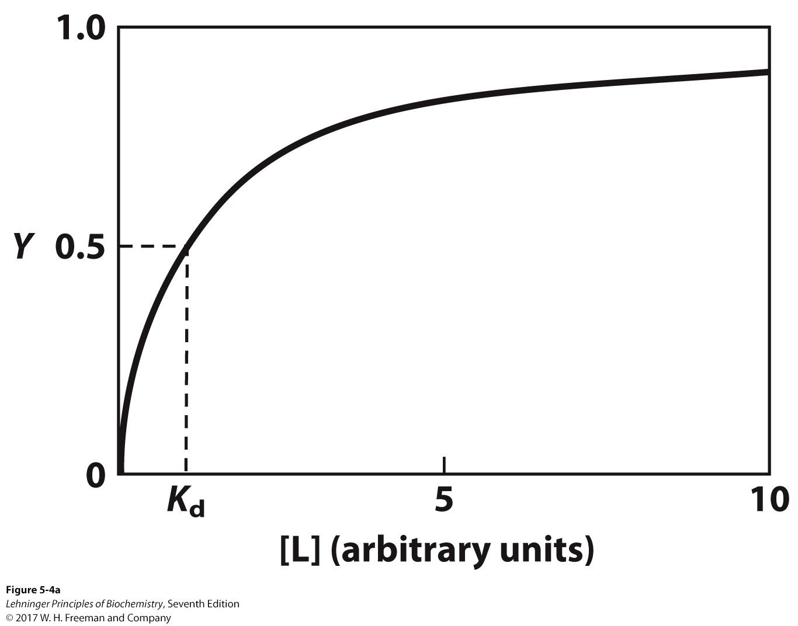
Exemplo: Ligação do Oxigênio à Mioglobina


Quando um ligante é um gás, a ligação é expressa em termos de pressões parciais.
\[\theta = \frac{[L]}{K_d+[L]}\]
⟶
\[\theta = \frac{pO_2}{p_{50}+pO_2}\]
Ligação: Conexões Termodinâmicas
A força de interação pode ser expressa como:
- constante de associação (ligação) Ka, unidades M−1
- constante de dissociação Kd, unidades M, Kd = 1/Ka
- energia livre de interação (ligação) ΔG°, unidades: kJ/mol
Definições
- ΔG° = ΔH° − TΔS°: entalpia e entropia
- Ka = [PL]/[P][L] Kd = [P][L]/[PL]
Relações
- ΔG° = −RT ln Ka = RT ln Kd (RT a 25°C é 2,48 kJ/mol.)
Magnitudes
- ligação forte: Kd < 10 nM
- ligação fraca: Kd > 10 μM
Exemplos de Força de Ligação
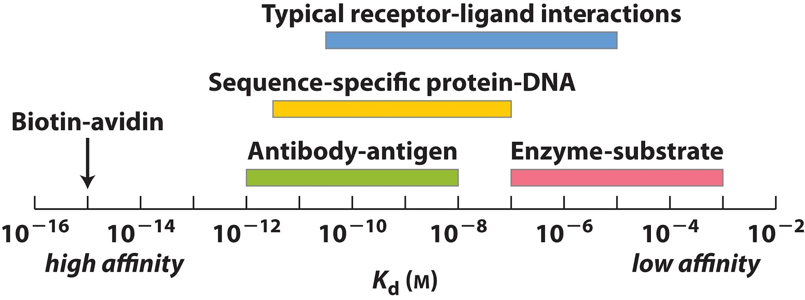
Especificidade: Modelo Chave-Fechadura
- As proteínas tipicamente têm alta especificidade: apenas certos ligantes se ligam.
- A alta especificidade pode ser explicada pela complementaridade entre o sítio de ligação e o ligante.
- Complementaridade em:
- tamanho
- forma
- carga
- caráter hidrofóbico/hidrofílico
- O modelo “chave-fechadura” de Emil Fischer (1894) assume que as superfícies complementares são pré-formadas.
Especificidade: Encaixe Induzido
- Mudanças conformacionais podem ocorrer após a ligação do ligante (Daniel Koshland em 1958).
- Essa adaptação é chamada de encaixe induzido.
- O encaixe induzido permite uma ligação mais firme do ligante.
- O encaixe induzido permite alta afinidade por diferentes ligantes.
- Tanto o ligante quanto a proteína podem alterar suas conformações.
Estudo de Caso I: Globinas São Proteínas Ligantes de Oxigênio
Problemas biológicos:
- As cadeias laterais das proteínas carecem de afinidade pelo O2.
- Alguns metais de transição ligam bem o O2, mas gerariam radicais livres se estivessem livres em solução.
- Compostos organometálicos como o heme são mais adequados, mas o Fe2+ no heme livre poderia ser oxidado a Fe3+ (muito reativo!).
Solução biológica:
Capturar a molécula de oxigênio com o heme ligado a uma proteína.
A mioglobina (armazenamento) e a hemoglobina (transporte) podem ligar oxigênio por meio de um heme ligado à proteína.
Estruturas da Porfirina e do Heme
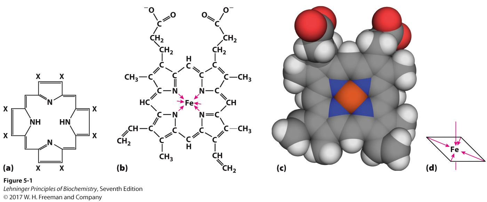
Estrutura da Mioglobina

Ligação do Monóxido de Carbono
- O CO tem tamanho e forma semelhantes ao O2; ele pode caber no mesmo sítio de ligação.
- O CO liga-se ao heme mais de 20.000 vezes melhor do que o O2 porque o carbono no CO possui um par de elétrons isolados preenchido que pode ser doado aos orbitais d vazios do Fe2+.
- O bolsão proteico diminui a afinidade pelo CO, mas ele ainda se liga cerca de 250 vezes melhor do que o oxigênio.
- O CO é altamente tóxico, pois compete com o oxigênio. Ele bloqueia a função da mioglobina, hemoglobina e citocromos mitocondriais envolvidos na fosforilação oxidativa.
Ligação de CO vs. O2 ao Heme Livre
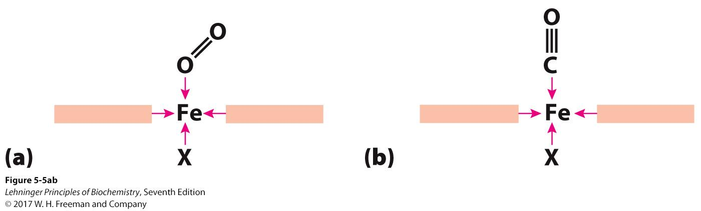
A Ligação do Heme à Proteína Afeta a
Ligação de CO vs. O2
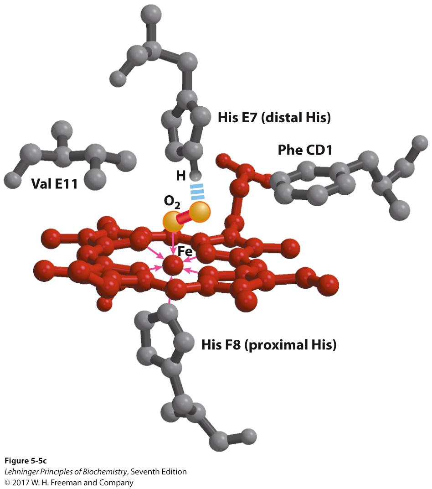
Detecção Espectroscópica da
Ligação de Oxigênio às Globinas
- O grupo heme é um forte cromóforo que absorve tanto na faixa ultravioleta quanto na visível.
- A forma ferrosa (Fe2+) sem oxigênio apresenta uma banda de Soret intensa em 429 nm.
- A ligação do oxigênio altera as propriedades eletrônicas do heme e desloca a posição da banda de Soret para 414 nm.
- A ligação do oxigênio pode ser monitorada por espectrofotometria UV-Vis.
- A desoxi-hemoglobina (no sangue venoso) apresenta cor arroxeada e a oxi-hemoglobina (no sangue arterial) é vermelha.
A Mioglobina Poderia Transportar O2?
- A pO2 nos pulmões é de cerca de 13 kPa: certamente liga bem o oxigênio.
- A pO2 nos tecidos é de cerca de 4 kPa: ela não o liberará!
Diminuir a afinidade (P50) da mioglobina pelo oxigênio ajudaria?
Para um Transporte Eficaz, a
Afinidade Deve Variar com a pO2
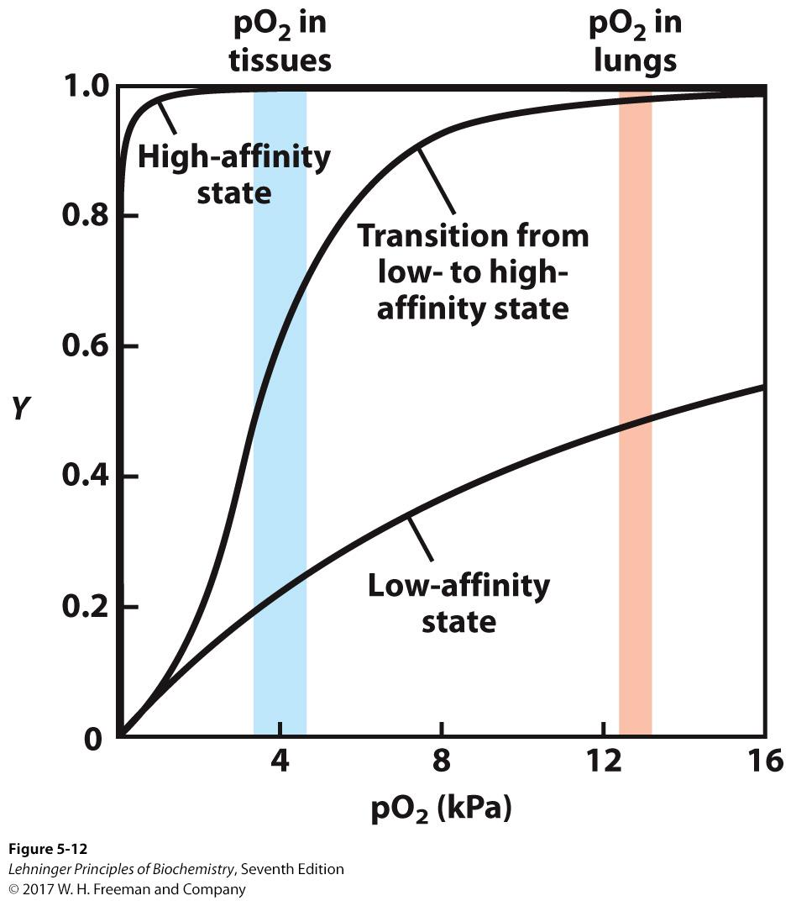
Como a Afinidade pelo Oxigênio Pode Mudar?
- Deve ser uma proteína com múltiplos sítios de ligação.
- Os sítios de ligação devem ser capazes de interagir entre si.
- Esse fenômeno é chamado de cooperatividade.
- cooperatividade positiva
- o primeiro evento de ligação aumenta a afinidade nos sítios restantes
- reconhecida por curvas de ligação sigmoidais
- cooperatividade negativa
- o primeiro evento de ligação reduz a afinidade nos sítios restantes
- cooperatividade positiva
Cooperatividade
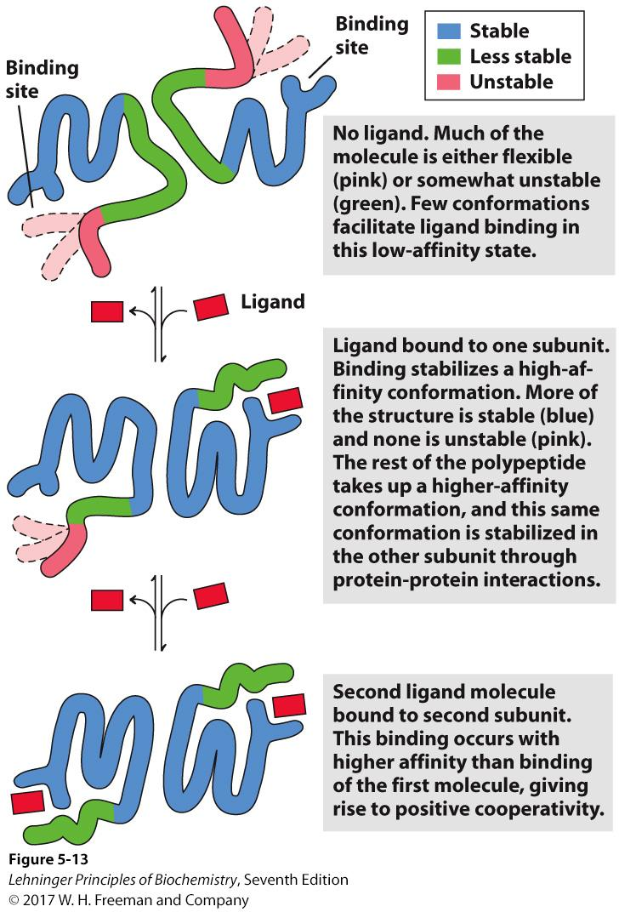
Cooperatividade: Descrição Quantitativa
\[K_a = \frac{[PL_n]}{[P][L]^n}\]
\[\theta = \frac{[L]^n}{[L]^n+K_d}\]
O Gráfico de Hill da Cooperatividade
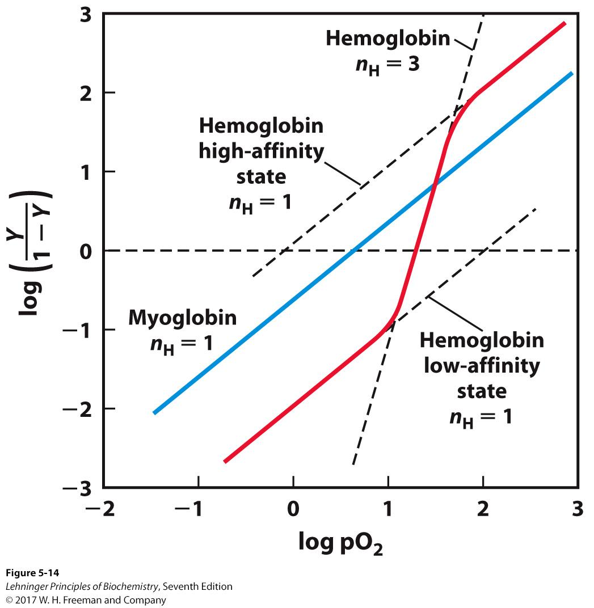
Dois Modelos de Cooperatividade:
Concertado vs. Sequencial
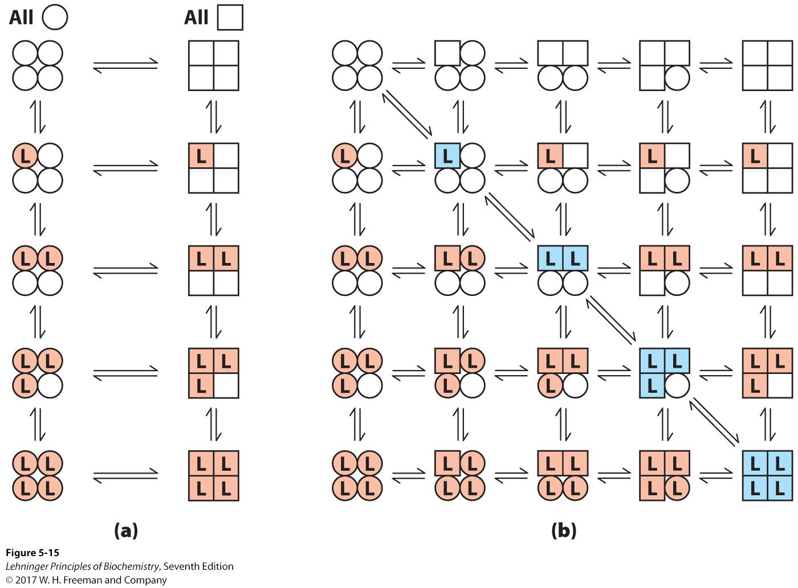
A Cooperatividade É um
Caso Especial de Regulação Alostérica
- Proteína alostérica
- A ligação de um ligante a um sítio afeta as propriedades de ligação de um sítio diferente na mesma proteína.
- pode ser positiva ou negativa
- homotrópica
- O ligante normal da proteína é o regulador alostérico.
- heterotrópica
- Um ligante diferente afeta a ligação do ligante normal.
- Cooperatividade = regulação homotrópica positiva
A Hemoglobina Liga Oxigênio Cooperativamente
- A hemoglobina (Hb) é um tetrâmero de duas subunidades (α2β2).
- Cada subunidade é semelhante à mioglobina.
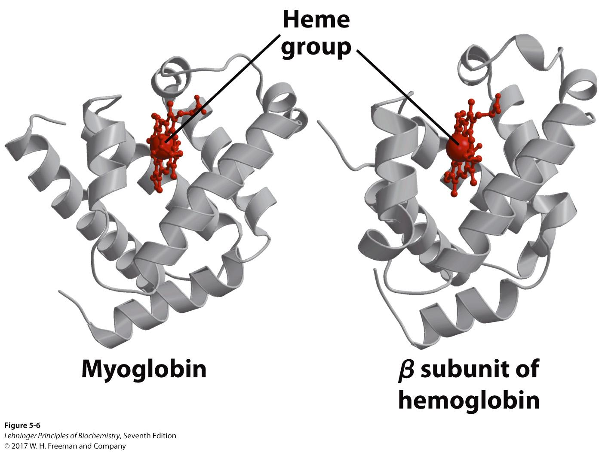
Interações entre Subunidades na Hemoglobina
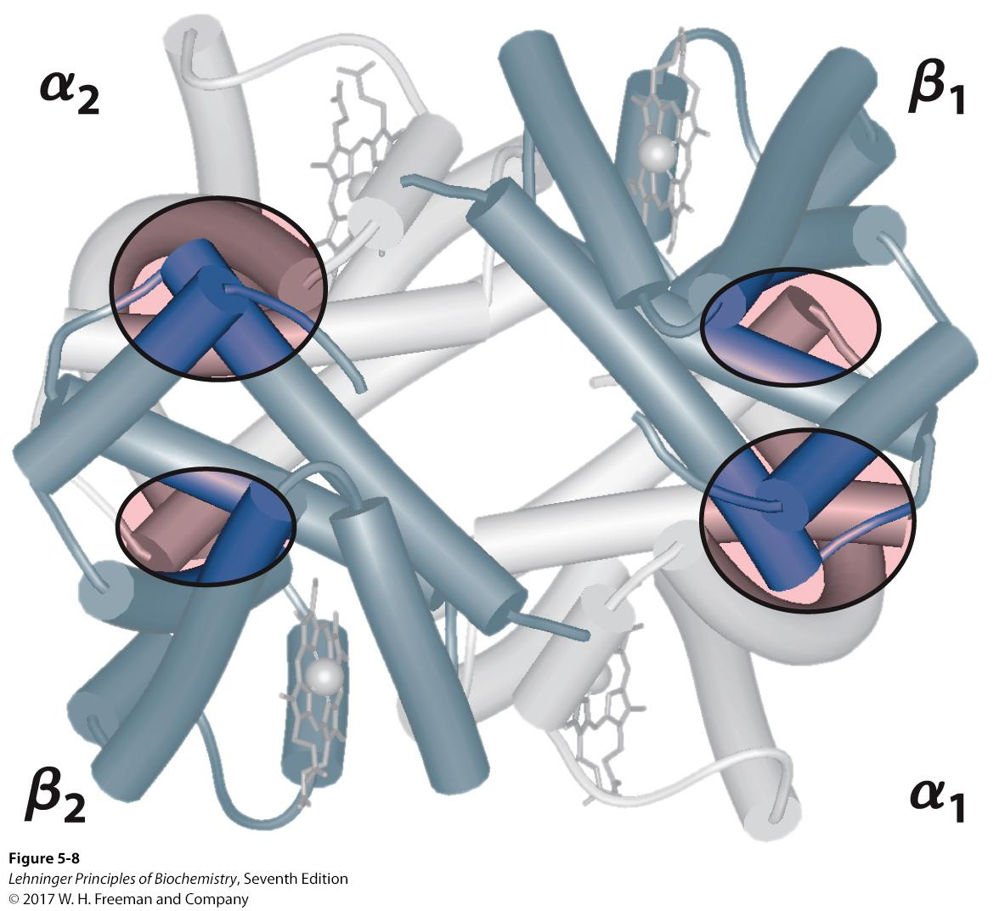
Interações entre Subunidades: Detalhes
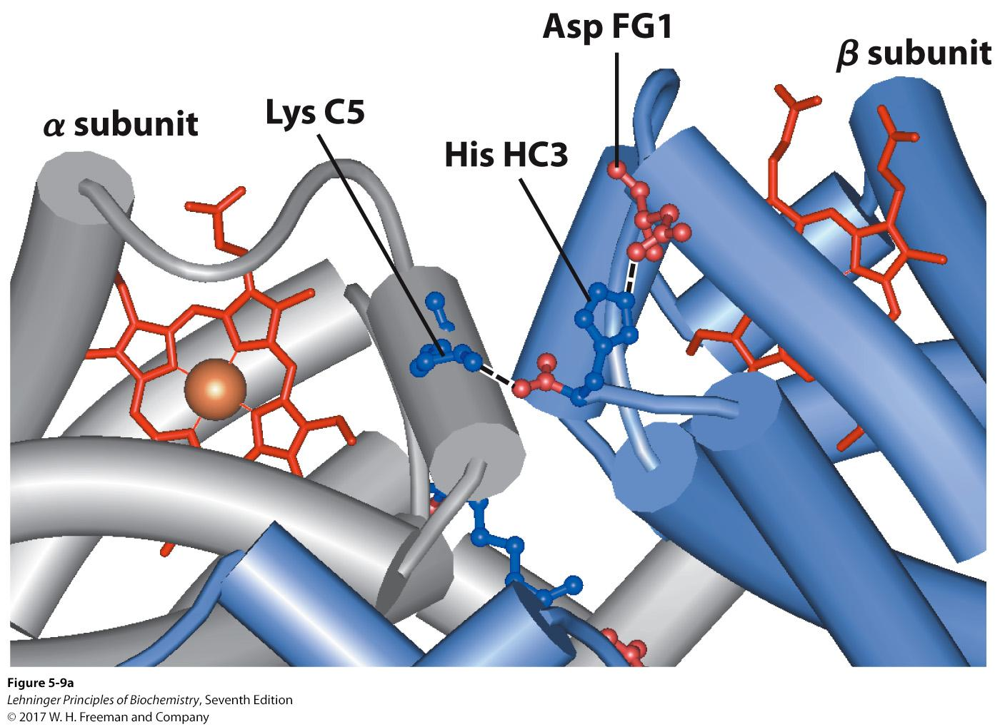
Interações entre Subunidades: Detalhes
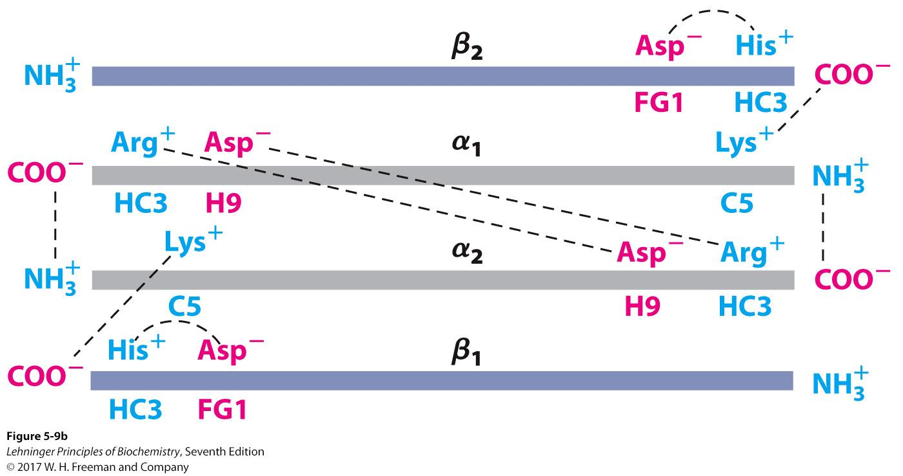
Similaridade de Sequência Entre
Hemoglobina e Mioglobina

Estados R e T da Hemoglobina
- T = estado tenso
- mais interações, mais estável
- menor afinidade pelo O2
- R = estado relaxado
- menos interações, mais flexível
- maior afinidade pelo O2
- A ligação do O2 desencadeia uma mudança conformacional T → R.
- A mudança conformacional do estado T para o estado R envolve a quebra de pares iônicos na interface α1-β2.
Estados R e T da Hemoglobina
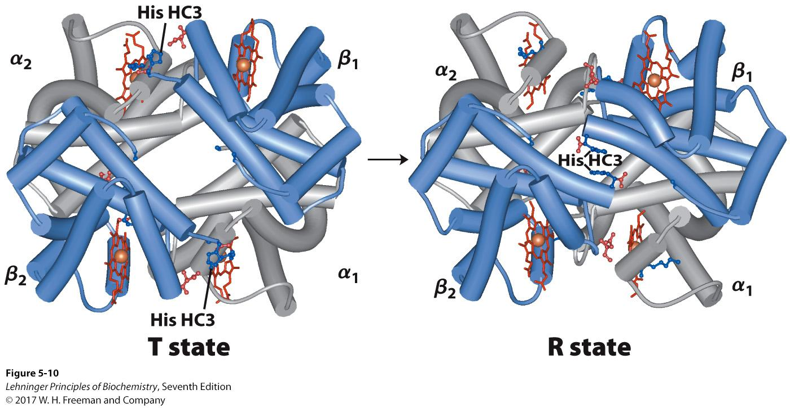
A Mudança Conformacional É Desencadeada pela Ligação do Oxigênio
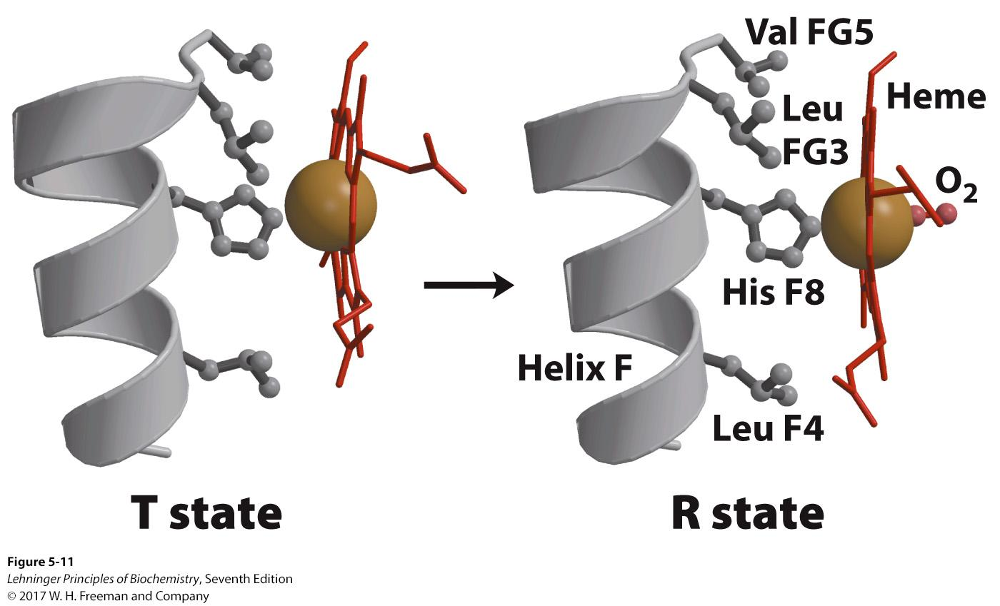
Efeito do pH na Ligação do O2 à Hemoglobina
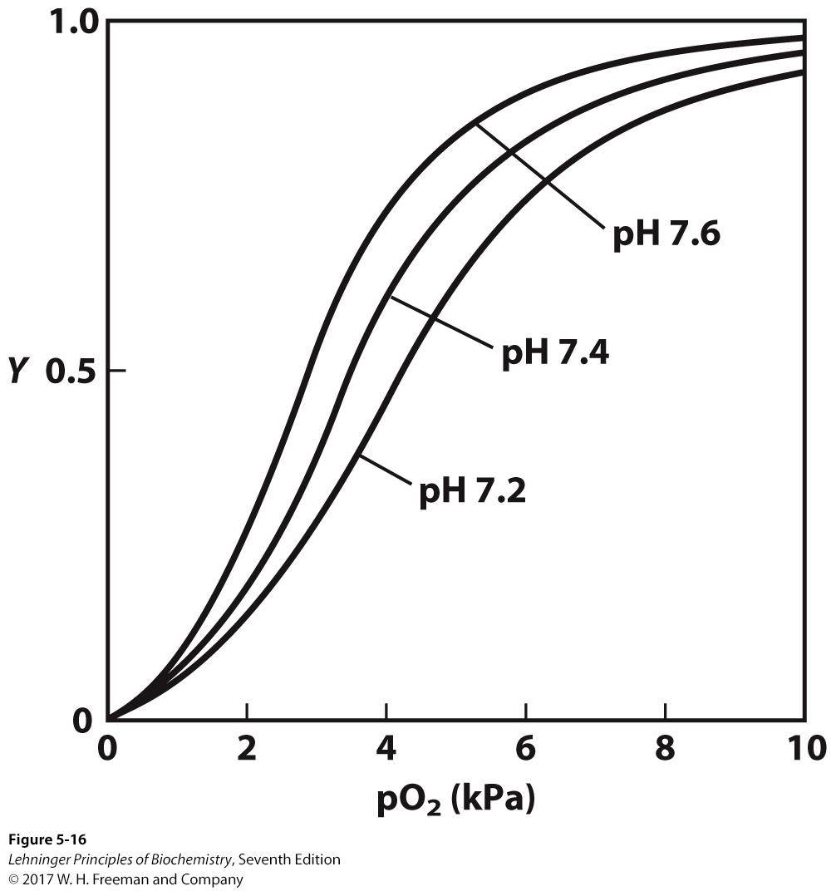
A acidez aumenta ou diminui o Kd?
Efeito do pH na Ligação do O2 à Hemoglobina
- Tecidos metabolicamente ativos geram H+, diminuindo o pH do sangue próximo aos tecidos em relação aos pulmões (catalisado pela anidrase carbônica).
CO2 + H2O ↔︎ HCO3− + H+
- A afinidade da Hb pelo oxigênio depende do pH.
- O H+ liga-se à Hb e estabiliza o estado T.
- protona a His146, que então forma uma ponte salina com o Asp94
- leva à liberação de O2 (nos tecidos)
- O H+ liga-se à Hb e estabiliza o estado T.
- A diferença de pH entre os pulmões e os tecidos metabólicos aumenta a eficiência do transporte de O2.
- Isso é conhecido como efeito Bohr.
Hemoglobina e Exportação de CO2
- O CO2 é produzido pelo metabolismo nos tecidos e deve ser exportado.
- 15–20% do CO2 é exportado na forma de um carbamato nos resíduos amino-terminais de cada uma das subunidades polipeptídicas.
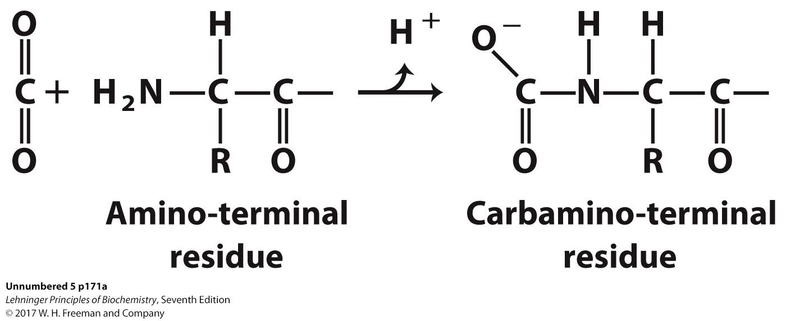
- Observe:
- A formação de um carbamato produz um próton que pode contribuir para o efeito Bohr.
- O carbamato forma pontes salinas adicionais, estabilizando o estado T.
O 2,3-Bisfosfoglicerato Regula a Ligação de O2
Regulador heterotrópico negativo da função da Hb
Presente em concentrações mM nos eritrócitos
- produzido a partir de um intermediário da glicólise
Molécula pequena carregada negativamente,
liga-se à cavidade central carregada
positivamente da HbEstabiliza o estado T

O 2,3-BPG Liga-se à Cavidade Central da Hb
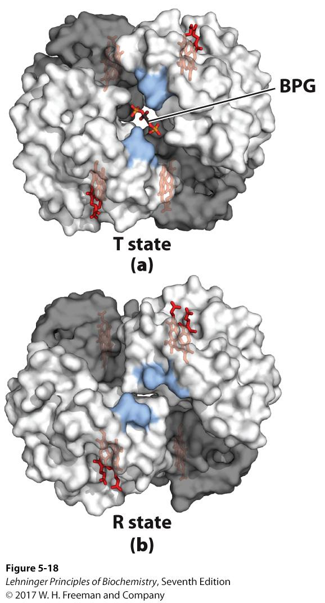
O 2,3-BPG Permite a Liberação de O2 nos Tecidos
e a Adaptação a Mudanças de Altitude
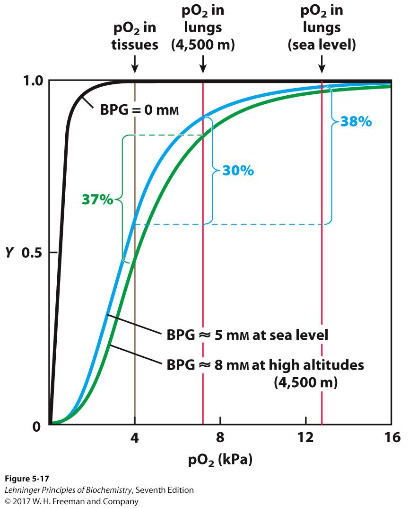
A Anemia Falciforme Deve-se a
uma Mutação na Hemoglobina
- Glu6 → Val na cadeia β da Hb
- A nova cadeia lateral de valina pode ligar-se a uma molécula diferente de Hb para formar um filamento semelhante às proteínas amiloidogênicas discutidas no Capítulo 4.
- Isso torna as hemácias falciformes (em forma de foice).
- Indivíduos homozigotos não tratados geralmente morrem na infância.
- Indivíduos heterozigotos exibem resistência à malária.

Formação de Filamentos de Hb
na Anemia Falciforme
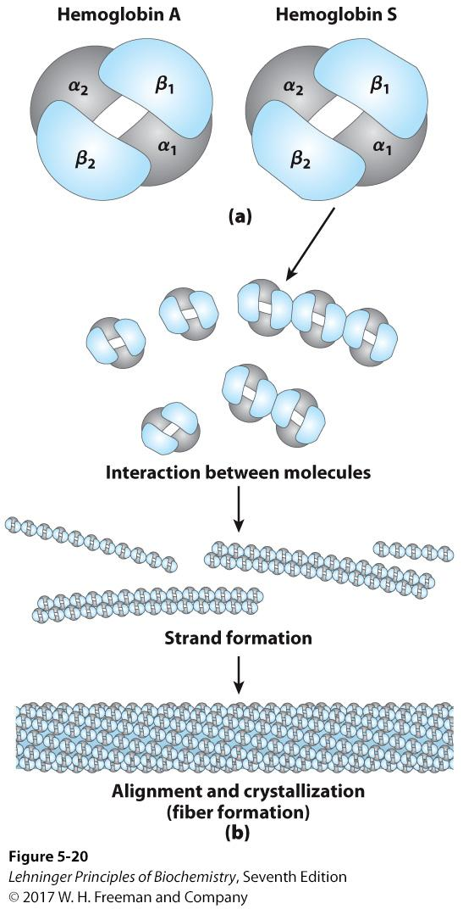
Estudo de Caso 2: Interação Anticorpo/Antígeno
Dois Tipos de Sistemas Imunes
- Sistema imune celular
- tem como alvo as próprias células que foram infectadas
- também elimina partículas virais e bactérias infectantes
- atores principais: macrófagos, células T citotóxicas (Tc) e células T inflamatórias (TH1)
- Sistema imune humoral (“fluido”)
- tem como alvo patógenos extracelulares
- também pode reconhecer proteínas estranhas
- produz anticorpos solúveis
- mantém “memória” de infecções passadas
- atores principais: linfócitos B e células T auxiliares (TH2)
Sistema Imune Celular
- Os anticorpos ligam-se a fragmentos exibidos na superfície das células invasoras.
- Fagócitos: células especializadas que englobam invasores
- Macrófagos: grandes fagócitos que ingerem bactérias marcadas por anticorpos
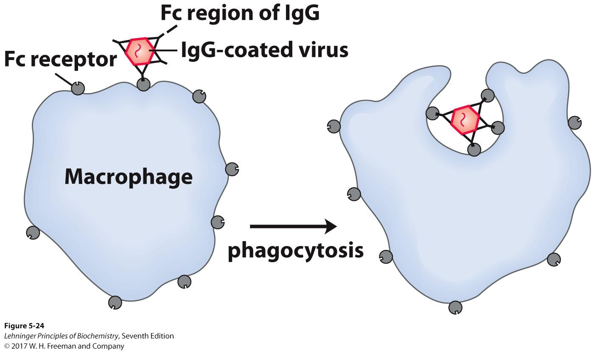
Sistema Imune Humoral
- Os vertebrados também combatem infecções com anticorpos solúveis que se ligam especificamente a antígenos.
- Antígenos são substâncias que estimulam a produção de anticorpos.
- tipicamente de natureza macromolecular
- reconhecidos como estranhos pelo sistema imune
- proteínas do envoltório de bactérias e vírus
- carboidratos de superfície de células ou vírus
- Anticorpos são proteínas produzidas pelas células B e que se ligam especificamente a antígenos.
- A ligação marcará o antígeno para destruição ou interferirá em sua função.
- Um determinado anticorpo ligar-se-á a uma pequena região (epítopo) do antígeno.
- Um antígeno pode ter vários epítopos.
- Antígenos são substâncias que estimulam a produção de anticorpos.
Anticorpos: Imunoglobulina G
Duas cadeias pesadas e duas cadeias leves
- compostas por domínios constantes e domínios variáveis
Cadeias leves: um domínio constante e um domínio variável
Cadeias pesadas: três domínios constantes e um domínio variável
Os domínios variáveis de cada cadeia formam o sítio de ligação ao antígeno (dois por anticorpo) e são hipervariáveis, o que confere especificidade ao antígeno.

Anticorpos: Imunoglobulina G
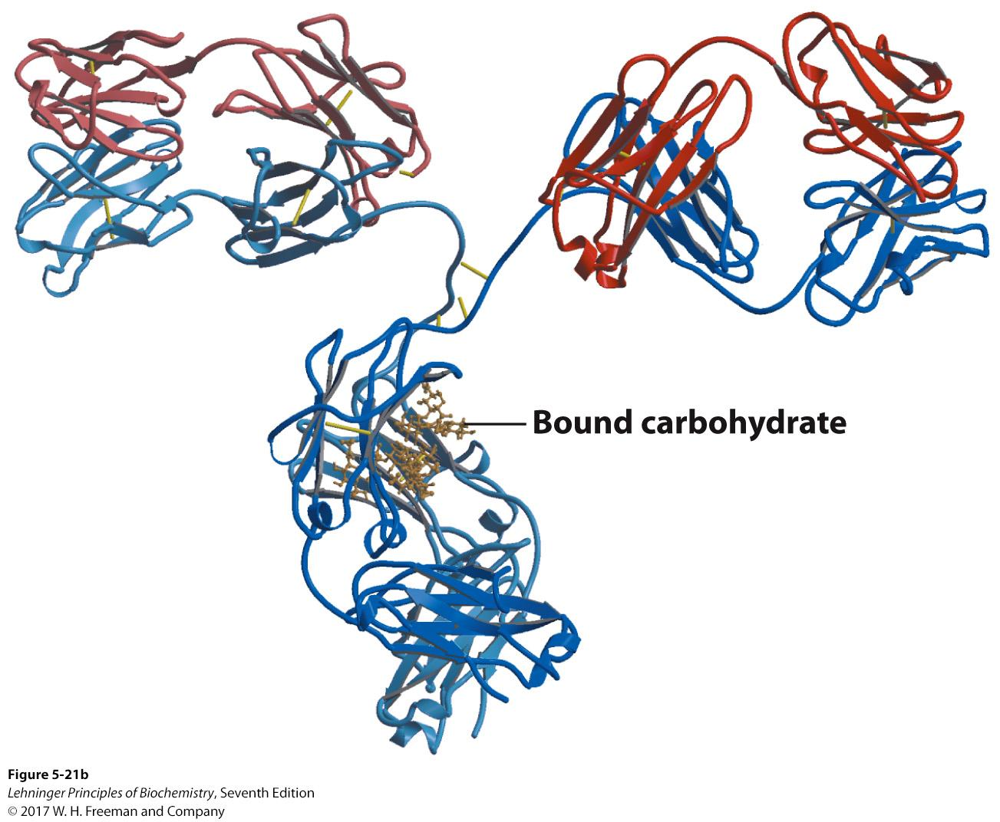
Antígenos Ligam-se via Encaixe Induzido
A ligação do antígeno causa mudanças estruturais significativas no anticorpo.
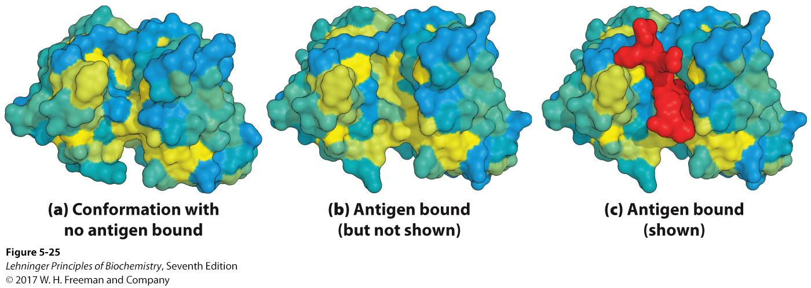
A Especificidade de Anticorpos É um
Importante Reagente Analítico
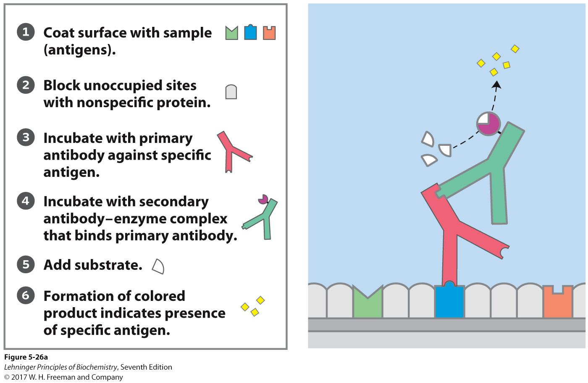
A Detecção de Anticorpos Pode Ser
Colorimétrica ou Luminescente
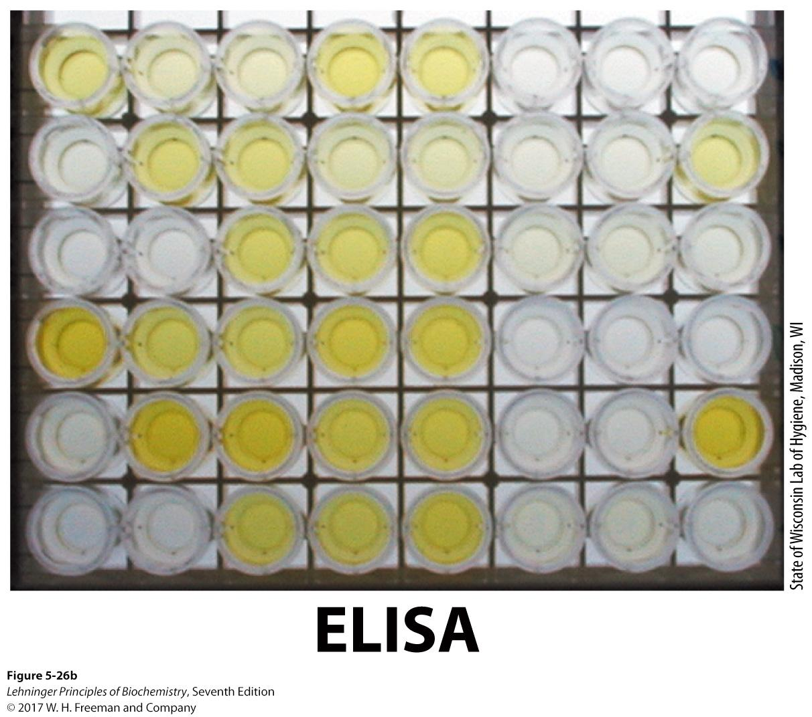
Estudo de Caso 3: Proteínas Musculares
Estrutura Muscular
- Fibra muscular: célula grande, única, alongada e multinucleada
- Cada fibra contém cerca de 1.000 miofibrilas.
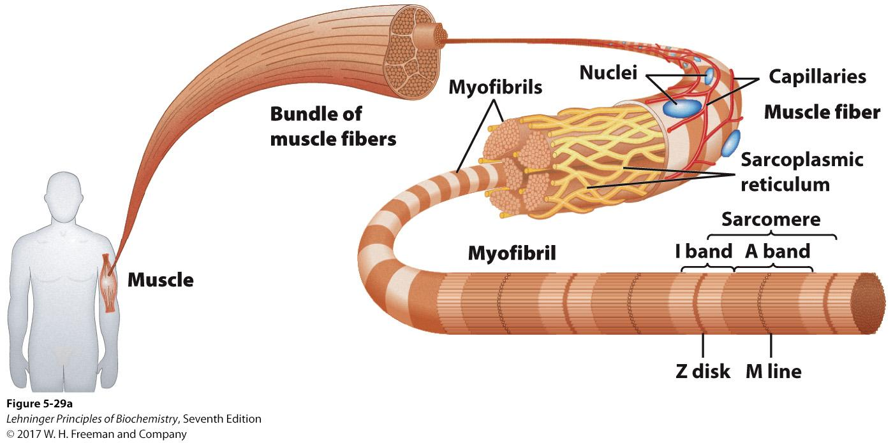
Miofibrilas Contêm
Filamentos Espessos de Miosina


Miofibrilas Contêm
Filamentos Finos de Actina
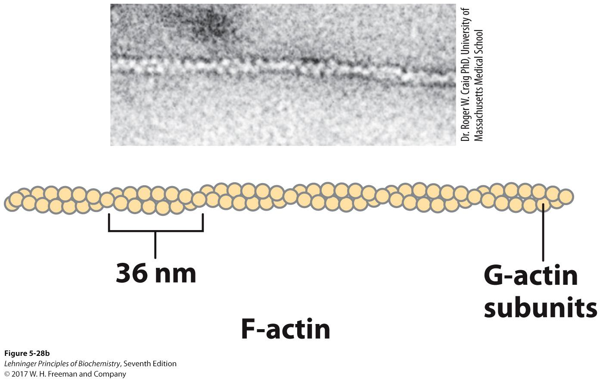
Filamentos Espessos de Miosina Deslizam ao Longo de
Filamentos Finos de Actina
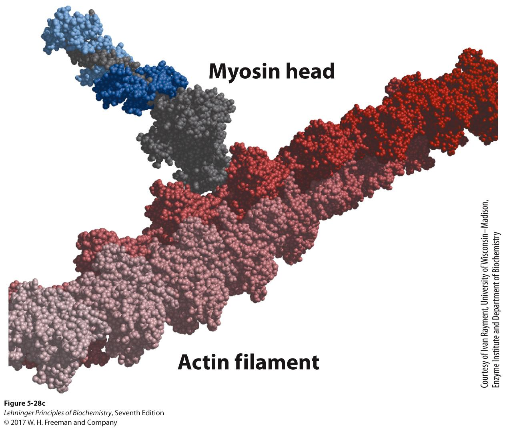
Filamentos Espessos de Miosina Deslizam ao Longo de
Filamentos Finos de Actina


Interações Proteicas
Moduladas por Energia Química
- O uso de energia química (ATP) pode causar mudanças conformacionais nas proteínas, geralmente necessárias para sua função.
Especialmente em proteínas motoras
- controlam o movimento de células e organelas dentro das células
- A contração muscular ocorre por meio de uma série de mudanças conformacionais na estrutura proteica devido à ligação, hidrólise e liberação de ATP e ADP.
Ciclo da Actomiosina
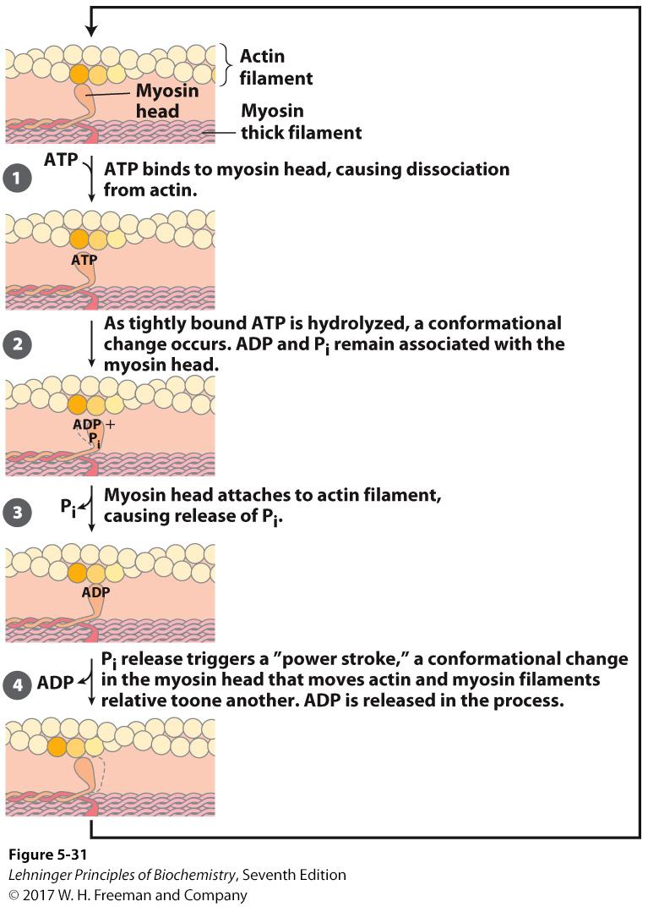
Regulação da Contração Muscular
- A disponibilidade dos sítios de ligação da miosina na actina é regulada pela troponina e tropomiosina.
- evita a contração muscular contínua
- O impulso nervoso desencadeia a liberação de Ca2+.
- causa mudanças conformacionais no complexo tropomiosina-troponina, expondo os sítios de ligação da miosina
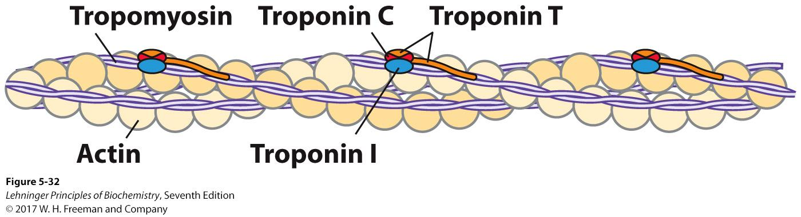
Capítulo 5: Resumo
Neste capítulo, aprendemos:
- como a ligação de ligantes pode afetar a função proteica
- como analisar quantitativamente dados de ligação
- como a mioglobina armazena oxigênio
- como a hemoglobina transporta O2, prótons e CO2
- como os anticorpos reconhecem estruturas estranhas
- como o músculo funciona